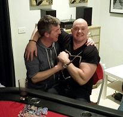

.....Record breaking attendance, paella feast and late night poker massive blinds....
| Date | Location | Game | Players |
|---|---|---|---|
| {{tournaments.tournamentOne[0].eventDate}} | {{tournaments.tournamentOne[0].location}} | {{tournaments.tournamentOne[0].tournament}} | {{tournaments.tournamentOne[0].noOfPlayers}} |
| Position | Name | Points |
|---|---|---|
| {{result.position}}{{positionSuffix(result.position)}} | {{result.name}} | {{result.points}} |
| Bounty Winner |
|---|
| {{tournaments.tournamentOne[0].bountyWinner}} |
| Position | Name | Played | Won | Win Ratio | Ave Points | Ave Position | Points |
|---|---|---|---|---|---|---|---|
| {{$index + 1}}{{positionSuffix($index + 1)}} | {{result.name}} | {{result.played}} | {{result.won}} | {{result.won / result.played * 100| number:2}} % | {{result.points / result.played | number:2}} | {{result.averagePosition | number:2}} | {{result.points}} |
The record books will need updating as the "Square poker" attendance record was shattered, with 9 attendees descending upon yet another new venue at Simon M's (Wombats). A game of endurance, patience and survival that would last into the wee hours of Sunday morning before fatigued drunken players could return to their domiciled abodes.
With a Spanish paella feast offered as pre-game calorie boost, it seemed the perfect choice to warmly welcome the Spanish speaking new player Carlos.
As stomachs digested more sea-food than a cat stuck in an acquarium, and the fridge holding enough beer to constitute it being called a bottle shop, the preceedings commenced. Junior was chosen as the random bonus winner player, although after the last event with Ben taking down the massive prize, meant if Junior were to win, it would not mean an early retirement.
The battle soon got off to a flying start with the second hand giving Mark V quad 9's, and taking down a good sized pot. This was probably Mark's highlight for the night, as it was downhill faster than a bad skier on a black run at Hotham, from there on in. Soon after, Brian received the nights first pocket Aces, and invaded Junior's stack pillaging a good dollop of chips as a result.
Jade's alcohol intake must have already been taking effect, as he dealt out 10 people. Soon after, another massive hand of the night elicited a flop containing AAK. Simon had trip Aces, Carlos (QK) and Mark V (55) both had two pairs, so it was only going to end in tears and tantrums. The turn and river cards helped no-one, so Carlos and Mark V's stacks were depleted quicker than a cake at a childrens party.
The community cards were offering straight opportunities on almost every hand, and Dave, Paul, Jade and Junior were all happy recipients of reasonable pots to keep their stacks in an accumulation phase.
Into the second hour with stacks replenished by the single and only free chip-up for the night now meant every stack was now on the line.
A vociferous outpouring of conversation was instigated after Jade thought he had won a pot. Jade held A3, matching a three on the board, but Ben's pocket Queens was clearly the winning hand (well, to 8 of the players). Jade questioned whether the rules were changing in the middle of the game, as surely his Ace kicker card meant he was the winner with all five cards. Vigourous head shaking, exclamations of WTF and general flummoxed looks suggests it might be time for someone to do some background reading :)
It wasn't long before Carlos had his time in the limelight, after the flop offered A33. The turn card was another 3, and with Carlos' grin spread so far over his face that it bumped into his neighbouring players, gave off plenty of warning signals. With a small bet from Carlos on the river, Brian holding an Ace decided to "keep him honest" and call. Brian's suspicions were confirmed, and for the second time of the night, four of a kind was revealed, but does show how poker is not just about the cards. Time to practice those poker faces :)
Dave had been quietly avoiding too many battles all night but decided he had to try to win a hand. Holding two hearts with the flop offering one more, meant his outside flush draw might keep him in the game longer. Brian was holding two higher hearts, but Mark put in a reasonable bet after the flop that pushed Brian off his hand, but Dave decided to go along for the ride. Another heart on the turn card, and the final river giving another heart (known as runner, runner) gave Dave just what he'd prayed for, and meant Mark's stack was emptying quicker than a parents wallet at a fun fair. Dave's chasing does highlight though, that sometimes you've got to be in it, to win it!
Shortly after, Mark thought his luck was changing as he was paid a visit by "pocket rockets" (AA). Not electing to raise pre-flop, Ben limped in with his pocket 2's but then had 3 of a kind after a 2 magically appeared on the flop. Conservative betting, that then turned into an all-in from Ben on the river card, put Mark in a tricky situation. Mark called, hoping that Ben had nothing better than a pair and much to Ben's delight, all of Marks chips headed in his direction. Being so early into the night and not wanting his night to end, Mark decided to delve into his wallet for a re-buy.
After the second break, blinds were now hurting peoples stacks, and with ante's also increasing the pain, it wasn't long before the walking wounded were shown the direction of the exit door. Mark, whose turn it was to avoid lady luck, came lucky last and received a round of applause for his efforts. Mark did though get some revenge by providing some mid game Sri Lankan roll snacks whose spice left some players reaching for the beers to cool down. Surprisingly, it was a while before the next casualty was recorded, as Carlos survived with his remaining chips in the middle of the table. Junior was also looking into the abyss, but survived more times that a Brazilian goalkeeper picking the ball out of the net against Germany (I had to get one in there somewhere!). It wasn't long though, before we lost one of the South American's as Carlos didn't survive the next blind onslaught and was out in 8th. With Jade's stack so low that he stated "It couldn't even buy an old Toyota Corolla" (or was that a Toy Yoda and a Corona?), he was next out in 7th.
Blinds were now higher than a stoned student, so players had no real choice but to chance their luck with two reasonable cards. Paul was the next to close his eyes and pray to the heavens, but was unceremoniously dumped out of the game. With four places being paid, the remaining five players (Ben, Brian, Dave, Junior and Simon) were holding on for the higher placements. Blinds had now increased to $1000, $2000 with a $100 ante, so unsurprisingly, it meant another player demise, and "more lives than a cat" Junior finally ended his night in 5th place, and means the super bonus rolls over the next event.
|  |
| Mutual respect from the top two players |
Breathtaking blind levels of $2000, $4000 with a $500 ante meant card selection was difficult, so Ben had to try to increase his chip stack. Simon though called Ben's bet and cleared him out, taking the down the bounty prize, and moving himself into a commanding chip leader position. Ben's only consolation was making the money and getting some extra bonus points for 4th place. Could home advantage again take out the top prize? The action was coming thick and fast, before the ominously high maxed out blinds at $5,000/$10,000 with a $500 ante was surely going to the end the night soon. Brian and Dave's stacks were in jeapoardy of being blinded out, so with Dave as big blind, he had no choice but to push all in, but Brian called and unluckily for Dave, his cards didn't hit the board, so he was out in a very respectable 3rd place.
The showdown battle between Brian and Simon, soon saw chips moving in both directions, with pots without raises equating to almost 50% of their stacks. Two exhausted players with even more exhausted spectators meant Simon had no choice but to call Brian's all in with two below par starting cards. Brian's Ace held leaving Simon with only $500 left, and with no real point of continuing, Simon gracefully acknowledged defeat.
The perfect storm conditions of a late start, players last ditch survival and extra break meant the clock was indicating that sunrise was only a few hours away. Players slunk away for a well earned sleep, although Brian's usual late night accident prone status did topple a stubby onto the kitchen floor. Brian did clean up the mess though, so that was one less bottle to transfer to the recycle bin!
Special thanks to Simon (or is that Mark) for hosting and feeding 8 other players. Another great night of cards, alcohol, great food, alcohol, more alcohol and banter that will hopefully keep bringing everyone back for more.